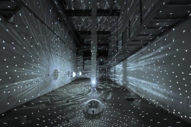

El presente trabajo se propone describir las características del VJing a comienzos de la segunda década del siglo XXI desde la perspectiva de su articulación con algunas manifestaciones del arte del siglo XX y con las tecnologías. Cada performance visual es única y efímera, producto de decisiones espontáneas del VJ en tiempo real, aunque paradójicamente esté basada en repeticiones (looping) que ayudan a crear un clima hipnótico de trance colectivo. Desde una estética de la recepción, esta experiencia puede vincularse con algunas propuestas artísticas de las artes visuales y performativas del siglo XX que intentaron incorporar el movimiento en las artes plásticas tales como el op art y el arte cinético. Desde su articulación con las tecnologías, el VJing realiza un empleo artístico de los medios electrónicos, la lógica de las bases de datos y el sampling. Entendido como montaje, el sampling también permite establecer un vínculo significativo entre el VJing y las vanguardias del siglo XX. Finalmente, desde la perspectiva tecnológica, la creciente libre disponibilidad de herramientas, tutoriales y programas informáticos de los últimos años convirtieron al VJing en una práctica ligada a la cultura del DIY.
 Vjin como muestra artísticaCrouzeilles, C. (2011) VJing: producción de experiencia, espectáculo, ilusión y montaje. Poéticas tecnológicas, transdisciplina y sociedad, 89. En línea.
Palabras clave: VJing–montaje–looping–arte cinético